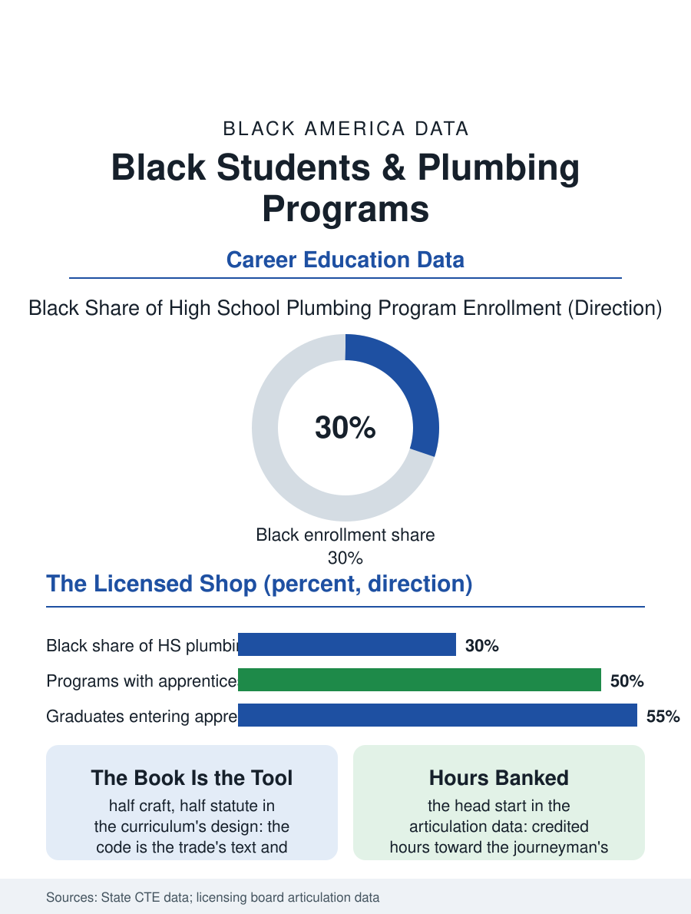

Black Education
Graded by Water: Black Students and Plumbing Programs
Half craft and half statute, graded by the pressure gauge, banked as hours toward the license. The plumbing program file.

The plumbing program is the CTE file's smallest shop and among its most lucrative destinations: the pipe, the vent, and the code taught against the master file's standing call for licensed hands, with the high school program's graduates articulating into the apprenticeships the trade's shortage has made competitive. This article reads the plumbing program file.
The Code as the Curriculum
The program's distinctiveness is the code's centrality: plumbing is the licensed trade whose book governs the work's legality in the inspection's pass or fail, so the student's education is half craft and half statute, the vent's sizing and the trap's geometry learned as the law's text with the pipe as its illustration, a literacy whose examination at the apprenticeship's door is the program's designed product. The lab's form is the rough-in wall and the mock house of the construction program's kin, the student's runs pressure-tested before the class in the trade's own verdict form, the leak as the grade. The tools' file is the hand's: the wrench and the torch and the threader, with the camera and the locator of the modern service trade entering the advanced term in the currency pattern of the other labs. The fixture's finish work is the program's second craft inside the first, the rough plumber's and the finish plumber's being different temperaments in the trade's own account, and the school lab that teaches both, the wall's hidden runs and the chrome's final alignment judged by the customer's eye, gives the completer the service call's whole arc in one education. The drain's camera and the jetter of the modern service van enter the advanced lab as the automotive file's scan tool did, the district's equipment budget deciding, in the pattern of every shop in this file, whether the graduate meets the current trade at the apprenticeship's door or meets its previous decade.
The Apprenticeship's Arithmetic
The graduate's market is the license file's own arithmetic: the plumber's shortage and the retirement wave have raised the apprentice's wage and the signing inducements of the shops in the metros, and the program's articulation agreements, the hours credited toward the journeyman's requirement by the licensing boards that recognize the school program, convert the diploma into the license's head start in the pattern of the health academy's credits, the file's most concrete currency. The service and the construction branches divide the class's destinations, the repair's diagnostic craft against the new work's production, with the program's instructors, master plumbers teaching against the trade's wage in the pattern of all the trade files, being the pipeline's scarcest input in the districts' vacancy data. The instructor is the program's scarcest input as in the other licensed shops, the master at the school's salary being a sacrifice the districts recruit from the trade's elders and its injured, whose hands the classroom preserves while their judgment multiplies, and the programs that lose that person lose, in the same semester, their articulation and their reputation with the boards, a fragility the CTE file's planners record as the licensed shops' standing risk.
Water, Lawfully Moved
The plumbing file closes on the trade's public health essence, because the plumber is the sanitation system's licensed keeper, the safe water in and the waste out being the civilization the code exists to protect, a dignity the program teaches as the trade's charter in the pattern of the other shops' self-respect. The lead file's replacement wave is the school's service project in the districts that run it, the students' hands on the city's own remediation under the masters' supervision, the curriculum as the public work. The boards count the credited hours each year. The file's last entry is the pressure gauge's hold on the student's first solo rough-in, the needle steady at the test's number while the class watches the joints for the betraying bead, the verdict arriving in water, the trade's oldest examiner, which has never once been persuaded by anything but the work. The completer's kit, the tools bought across the program's years on the instructor's list, leaves the school as the apprentice's first capital, itemized like a dowry. The kit's list is the program's contract with the family, itemized and kept.
More in Black Education
Black Educational Attainment: High School Parity, the College Gap
About 89 percent of Black adults hold a high school diploma and one in four holds a bachelor's degree or higher — the attainment ladder, the college completion gap, and the generational trend.
Historically Black Colleges and Universities: Enrollment and Degrees
More than 100 HBCUs enroll roughly 290,000 students and award about one in six Black bachelor's degrees — an outsized share from a small sector. The federal education data.
Black College Enrollment: 2.4 Million Students
About 2.4 million Black students are enrolled in American colleges — nearly two-thirds of them women. The NCES enrollment data by sector, level, and trend.
Source: State career and technical education data; state plumbing board school articulation records.